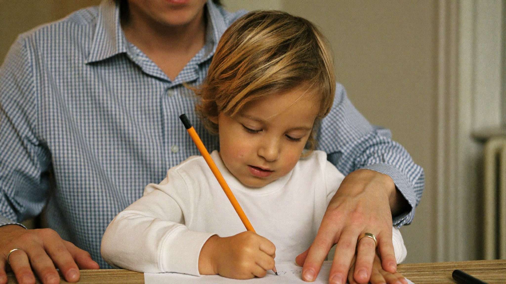

Pencil Grip 101: Helping Little Hands Hold a Pencil Correctly
By Leslie Dykstra · Certified Early Childhood Specialist · Williamson County, TN

If your child is holding a pencil in a tight fist — or gripping it in some creative way you've never seen before — you are not alone. I see this all the time in my work with young learners here in Williamson County. The good news is that the correct pencil grip for kids is something we can practice, and it makes a real difference in how comfortable and confident your child feels when they write.
As a certified early childhood specialist, I've helped many children shift their grip in a way that feels natural, not forced. Here's what you need to know.
What is the correct pencil grip for kids?
The grip most teachers and specialists look for is called the dynamic tripod grip. It looks like this:
- The pencil rests lightly on the middle finger.
- The thumb and index finger pinch the pencil gently — not tightly.
- The ring finger and pinky curl in for support.
- The wrist rests on the table, and the hand can slide smoothly across the paper.
The word "dynamic" is important. The fingers should move while writing, not lock in place. A tight or rigid grip tires little hands out fast and makes letter formation harder.
Most children land in this grip naturally somewhere between ages 4 and 6. Before that, a fisted grip is completely normal for a 2- or 3-year-old who is still building hand strength.
When should I start worrying about my child's pencil grip?
Watch, but don't panic. A few signs that a grip may be getting in the way:
- Your child's hand gets tired or cramped quickly.
- Letters come out shaky or uneven, even when they know the letter shape.
- They press so hard the pencil tears the paper.
- They hold the pencil stiffly, with no finger movement at all.
If your child is 6 or older and writing regularly, this is a good time to take a closer look. Old habits get harder to change once they are practiced for years. That said, many children with awkward grips write just fine — what matters most is whether it's causing frustration or fatigue.
You might also want to peek at our signs your child is struggling to read post, since writing and reading development often go hand in hand.
What tools help kids hold a pencil correctly?
You don't need a fancy kit. A few inexpensive tools can make a big difference:
- Pencil grips — small rubber or foam attachments that guide little fingers into the right position. The Crossover Grip and the Start Right Grip are two commonly available options.
- Triangular pencils — the shape naturally encourages finger placement. These are widely available in school-supply sections.
- Short pencils or golf pencils — a shorter pencil is harder to fist-grip and easier to hold with fingertips. Try breaking a regular pencil in half.
- Crayons broken in half — same idea. Short tools encourage pincer movement.
One thing I tell parents often: the tool only helps if your child uses it consistently. Putting a grip on the pencil and then not thinking about it again won't stick. A few focused minutes of practice each day goes much further.
What activities help kids develop a better grip?
The grip doesn't live in isolation. It comes from the strength and coordination your child builds through all kinds of play. Here are some that pay off:
- Playdough and clay — squeezing, rolling, and pinching build the exact muscles needed for a good grip.
- Tearing paper — sounds simple, but tearing small pieces builds finger control.
- Picking up small objects — dried beans, buttons, or small blocks moved with just the fingertips strengthen the pincer grasp.
- Clothespins — squeezing clothespins open and closed is one of the best grip-building exercises I know.
- Chalk on a vertical surface — drawing on a chalkboard or paper taped to the wall puts the wrist in a position that makes tripod grip easier.
These are also great summer activities for children who are getting ready for kindergarten. If you want a full picture of what kindergarten readiness looks like, our free 25-point Kindergarten Readiness Checklist covers fine-motor skills alongside reading, math, and social skills.
How do I correct my child's grip without a battle?
Gently and early is the way. A few ideas:
- Model the grip yourself. Let them watch you hold a pencil and narrate: "I put my pencil right here between my fingers, like a little pinch."
- Use a pencil grip tool and make it feel special rather than corrective.
- Redirect in the moment with calm, matter-of-fact language: "Let's try the pinch-and-rest way. Like this."
- Practice for short bursts. Two or three minutes of intentional grip work is plenty for a preschooler.
Avoid making it a big deal. Children pick up on our anxiety about these things and can start to resist writing altogether. Keep the tone light. Praise the effort and the attempt, not just the outcome.
For children who are writing regularly, exploring our programs page will show you how 1-on-1 sessions can address grip alongside letter formation and early writing skills.
Frequently asked questions
At what age should my child have a mature pencil grip?
Most children develop the dynamic tripod grip between ages 4 and 6. By the time they enter kindergarten, a functional grip — even if not textbook-perfect — is the goal. If your child is in first grade and still struggling, it's worth getting a closer look.
Does pencil grip really affect writing quality?
Yes, over time it does. A tight or awkward grip tires the hand, slows writing speed, and can make letter formation inconsistent. Addressing it early is much easier than waiting.
My child's teacher hasn't mentioned it. Should I still work on it?
Absolutely. Teachers see 20+ children and may not catch every grip detail. You know your child best. If something seems off, trust that instinct.
Want personalized help with writing readiness?
If you'd like a closer look at your child's grip, letter formation, or fine-motor development, I'd love to chat. Book a free 15-minute consultation and let's see exactly where your child is and what would help most.
Little Minds, Big Futures — where every child's potential takes flight.